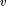
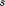

Contents
rewrap.m
Summary: Map the numerical elements in the vector  onto the variables , which can be of any type. The number of numerical elements must match; on exit, should be empty. Non-numerical entries are just copied. See also the reverse unwrap.m.
[s v] = rewrap(s, v)
Input arguments:
s structure, cell, or numeric values v structure, cell, or numeric values
Output arguments:
s structure, cell, or numeric values v [empty]
Copyright (C) 2008-2013 by Marc Deisenroth, Andrew McHutchon, Joe Hall, and Carl Edward Rasmussen.
Last modified: 2013-03-25
function [s v] = rewrap(s, v)
Code
if isnumeric(s) if numel(v) < numel(s) error('The vector for conversion contains too few elements') end s = reshape(v(1:numel(s)), size(s)); % numeric values are reshaped v = v(numel(s)+1:end); % remaining arguments passed on elseif isstruct(s) [s p] = orderfields(s); p(p) = 1:numel(p); % alphabetize, store ordering [t v] = rewrap(struct2cell(s), v); % convert to cell, recurse s = orderfields(cell2struct(t,fieldnames(s),1),p); % conv to struct, reorder elseif iscell(s) for i = 1:numel(s) % cell array elements are handled sequentially [s{i} v] = rewrap(s{i}, v); end end